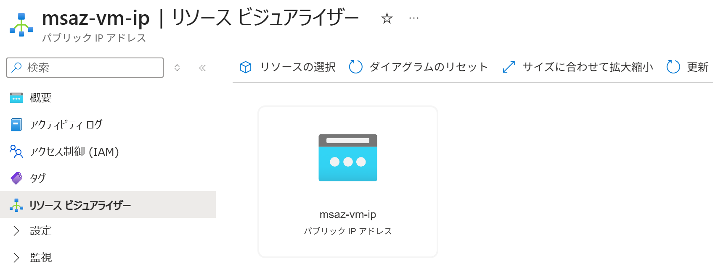

Azure ポータル で パブリック IP アドレス を作成する
適用対象: ✔️ パブリック IP アドレス
この演習では、Azure ポータル を使用してパブリック IP アドレスを作成します。
所要時間: 約 5 分
先行の演習
この演習を始める前に リソースグループを作成する を完了してください。
タスク 1: パブリック IP アドレスの作成
パブリック IP アドレスを作成します。
- 上部の検索ボックスに
パブリック IP アドレスと入力します。 - [パブリック IP アドレス] を選択します。
- [＋ 作成] を選択します。
- 使用する サブスクリプション を選択します。
- リソース グループで
msaz-rgを選択します。 - 利用可能な リージョン を選択します。
- 以下の設定値を入力または確認します。指定のない項目はデフォルトのままにします。
設定 値 名前 msaz-vm-ipIP バージョン [IPv4] SKU [Standard] 可用性ゾーン [Zone-redundant] レベル [Regional] IP アドレスの割り当て [静的] - [次へ] を選択します。
- DDoS 保護 タブで、設定項目を一通り確認します。設定値はデフォルトのままにします。
- [レビューと作成] を選択します。
- 内容を一通り確認し、[作成] を選択します。
- 完了を待ちます。
タスク 2: 作成されたリソースの確認
パブリック IP アドレスが作成されていることを確認します。
- ポータルメニューから [リソース グループ] を選択します。
msaz-rgを選択します。- サービスメニューから [リソースビジュアライザ―] を選択します。
msaz-vm-ipが作成されていることを確認します。